Arquivo: /etc/nginx/servers/https.conf
Obs: Alguns certificados gerados pelo Let’s Encrypt são um pouco diferentes, eles possuem o fullchain.pem e privkey.pem, assim, o fullchain.pem seria posto em ssl_certificate e o privkey.pem seria posto em ssl_certificate_key.